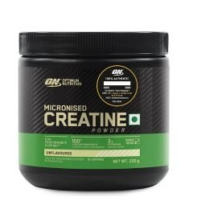

Suplementet janë produkte të cilat mirren për nevojat e shtuara të organizmit. Suplementet në përmbajtjen e tyre kanë vitamina e minerale të cilat nuk kanë mundësi të konsumohen përmes ushqimit. Si suplemente llogariten vitaminat, proteinat, pijet sportive etj. Në disa vende këto materie ushqyese i quajnë si ushqime e disa të tjerë si ilace.
Rreth 77% e të rriturve marrin një lloj suplementi. Njerëzit marrin suplemente për një sërë arsyesh, por zakonisht ato janë për të promovuar shëndetin e përgjithshëm ose për të mbështetur dhe përmirësuar performancën sportive.
Çdo suplement ka qëllimin specifik, dhe është e rëndësishme që suplementet të konsumhen me një qëllim, prandaj duhet pasur një qëllim paraprak pastaj të merret suplementi.
Suplementet nuk duhet të shihen kurrë si një zëvendësim i një diete të përditshme, por vetëm si ushqim shtesë. Suplementet mund të plotësojnë dieton tonë me mikronutrientë, por jo edhe me makroutrientë.
Whey Protein - mund të konsiderohet një ushqim funksional dhe jo një suplement dhe mund të jetë një mjet i dobishëm në dietën e një Sportisti për dy arsye:
Është i përshtatshëm
Është një burim proteinash me cilësi të lartë
Whey Protein rrjedh nga një proteinë që gjendet në qumështin e lopës dhe kjo proteinë përbën afërsisht 20% të proteinës totale që gjendet në qumësht. Ka shumë lloje të proteinave të disponueshme në treg, por Whey Protein është më e popullarizuara dhe studimet kanë treguar se është më efektive.
Benefitet e konsumimit te Whey Protein
Ndertim te muskujve - Muskujt pelqejn proteinen pas stervitjes e sidomos nje lloj si Whey-Protein
Shërim te plageve - Aminoacidet në proteinën e hirrës ndihmojnë në riparimin e lëkurës dhe indeve nga plagët ose operacionet.
Shtimi në peshë - Njerëzit që kanë nevojë të shtojnë peshë mund të përfitojnë nga proteina e hirrës.
Creatina - Kreatina është një përbërës që gjendet kryesisht në indet e muskujve (rreth 90-100% të rezervat e kreatinës së trupit gjenden në indet e muskujve.) Kreatina ndikon në rritjen e energjisë së muskujve gjatë ushtrimeve me intensitet të lartë. Kjo do të thotë se kreatina ndihmon në ushtrimet me intensitet të lartë që zgjasin deri në 10 sekonda.
Gjatë aktiviteteve të tilla me intensitet të lartë, trupi ka nevojë për të furnizuar energji me shpejtësi jashtëzakonisht të shpejtë dhe burimet e zakonshme të energjisë si p.sh karbohidratet dhe yndyrat thjesht nuk mund të plotësojnë shkallën e kërkesës për energji.

Benefitet e konsumimit te Creatines
Ndihmon qelizat e muskujve të prodhojnë më shumë energji - Suplementet e kreatinës rrisin rezervat e fosfokreatinës, duke lejuar të prodhojm më shumë energji ATP për të ushqyer muskujt gjatë ushtrimeve me intensitet të lartë
Përmirëson performancën e ushtrimeve me intensitet të lartë - Roli i drejtpërdrejtë i kreatinës në prodhimin e ATP do të thotë se mund të përmirësojë në mënyrë drastike performancën e ushtrimeve me intensitet të lartë.
Përshpejton rritjen e muskujve - Kreatina është suplementi më efektiv në botë për shtimin e masës muskulore.
Pre Workout - është një shtesë që mund të rrisë nivelet e energjisë, të përmirësojë performancën e stërvitjes dhe të stimulojë rritjen e muskujve. Atletët, veçanërisht vrapuesit dhe peshëngritësit, përdorin suplemente para stërvitjes përpara ushtrimeve si ngritja e peshave ose HIIT (stërvitje me interval me intensitet të lartë).
Atletët zakonisht konsumojnë suplemente para stërvitjes si tablet ose si pluhura të përziera në pije ose ushqime të buta. Ju gjithashtu mund të përzieni suplementet para stërvitjes me pluhur proteinash, të cilat mund të ndihmojnë në stimulimin e sintezës së proteinave dhe ndërtimin e muskujve.
Benefitet e konsumimit te Pre Workout
Rrit Forcën - Pre Workout rrisin forcën në disa mënyra. Përveç përfitimit të dukshëm të rritjes së muskujve, Pre Workout para stërvitjes gjithashtu forcojnë metabolizmin tuaj për të rritur forcën gjatë stërvitjes dhe për një rritje të qëndrueshme të forcës nga stërvitja juaj.
Rrit qëndrueshmërinë - Mënyra kryesore për të rritur qëndrueshmërinë është heqja e mekanizmave që shkaktojnë lodhje. Pre Workout para stërvitjes e arrijnë këtë.
Ju ftoj ta ndiqni pergaditjen e nje smothie me produktet tona
Nese motivi ju mungon per t ushtruar ju ftoj ta ndegjoni kete
KUJDES
Është e qartë që përdorimi i këtyre suplementeve ndikon në rritjen e performancës së sportistit, por përdorimi i tyre duhet bërë vetëm pas konsultimit me mjekun pasi që ka mundësi të kenë efekte negative në shëndetin e Futbollistit.